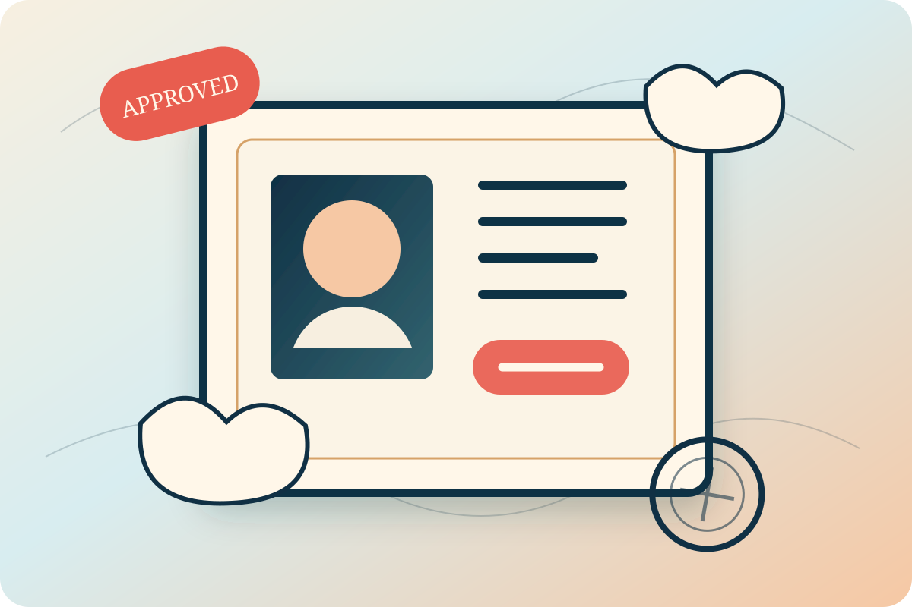
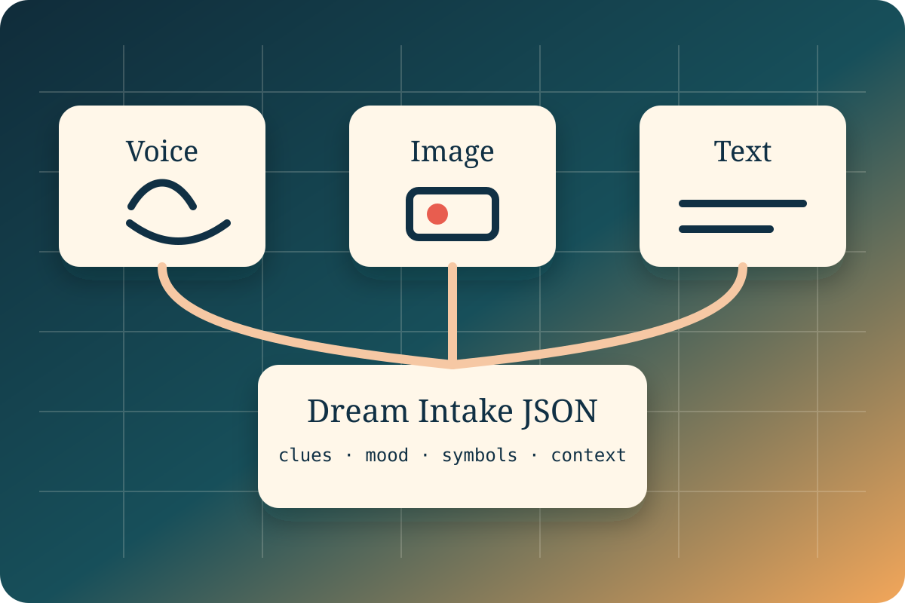
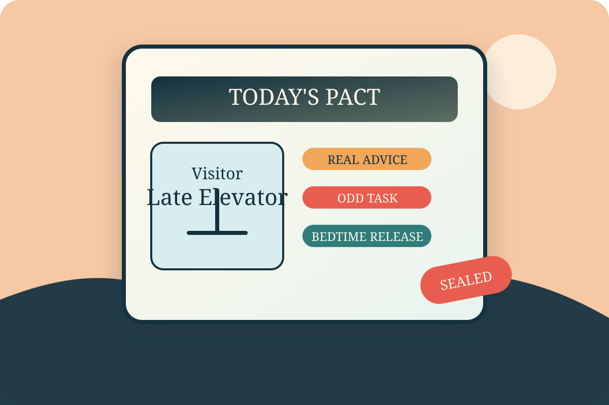

和昨晚的梦结盟
一个三模态小模型应用：你用语音、图片或文字申报梦境。梦境海关把不安转成第二天的小建议， 把怪梦转成一件 5 分钟能完成的有趣小事。

产品定位
它不是梦境诊断器
梦境海关不告诉用户“你有什么心理问题”，也不把梦解释成病症。它把梦当成一个来访者： 也许荒诞，也许吵闹，但可以谈判、安置、盖章放行。
它是第二天的小同盟
输出重点不是解释过去，而是给明天一个轻量动作：一条认真建议、一个怪趣任务、 一句睡前放行仪式。用户睡不好时，也能获得一点温柔的秩序感。
三模态申报入口

语音
睡醒后直接说梦，先由很小的 ASR 适配器转写成文本。它只负责转写，不参与梦境理解， 保证 MiniCPM 仍是体验核心。
图片
上传梦境草图、床边便签、截图或随手拍。MiniCPM-V-4.6 读取视觉线索： 人、地点、物件、颜色、文字和情绪暗示。
文字
最稳定的主入口。用户直接写梦境内容、醒来后的感觉、反复出现的符号， MiniCPM5-1B 进入结盟谈判。
MVP 体验流
申报
用户用语音、图片或文字提交梦境。系统合并成统一的 Dream Intake JSON。
来访者画像
MiniCPM5-1B 把梦境命名为一个来访者，例如“迟到的电梯”。
结盟谈判
海关官提出 2-3 个温柔古怪的问题，帮助用户把梦转成可行动线索。
今日盟约
生成一张可截图分享的盟约卡：认真建议、怪趣任务、睡前放行。
模型分工
MiniCPM-V-4.6：梦境目击证人
负责多模态感知：草图、便签、截图、照片中的视觉元素抽取。输出结构化线索， 不承担最终建议，避免视觉模型被迫做长文本人格化写作。
MiniCPM5-1B：梦境外交官
负责核心体验：梦境来访者命名、谈判问题、今日建议、怪趣任务、睡前放行仪式。 1B 模型足够轻，和赛题“小而巧”的精神贴合。
Dream Intake JSON
{
"dream_text": "我梦见自己一直赶不上电梯，楼层按钮会融化。",
"visual_clues": ["歪斜电梯门", "蓝色楼道", "融化的数字 14"],
"mood": "焦虑但有点滑稽",
"recurring_symbols": ["电梯", "迟到", "融化的按钮"],
"uncertainty": "梦的后半段记不清",
"user_context": "最近晚上常做梦，睡醒后想获得第二天建议"
}
输出样例
来访者：迟到的电梯
携带物：未申报的焦虑、融化的按钮、一小袋没来得及开始的事。
准入决定：准许入境，但必须在今天被安置成一个小动作。
今日建议：提前 10 分钟开始一件最小的任务，不追求完成，只追求启动。
怪趣任务：给电梯写一句道歉信：“抱歉总让你替我背迟到的锅。”
睡前放行：“今日电梯已停靠，未完成事项明日再报关。”
SEALED
安全边界
不诊断
不输出心理疾病判断，不解释成创伤证据，不制造恐惧。
轻建议
只给生活层面的温和建议和微行动，避免医疗化、绝对化和命令式措辞。
升级提示
如果用户表达长期严重失眠、自伤念头或强烈痛苦，提示寻求专业帮助。
Demo 叙事
视频可以从真实场景开始：晚上睡不好，早上醒来还记得一个怪梦。用户对着麦克风说几句， 又拍一张床边便签。系统把它转成梦境申报表，盖章签发今日盟约卡。 结尾展示那个 5 分钟怪趣任务真的被执行了。
比赛定位：更偏 Thousand Token Wood，因为它是一个 AI 承重的怪异互动体验； 同时也能讲 Backyard AI，因为它来自真实睡眠困扰。